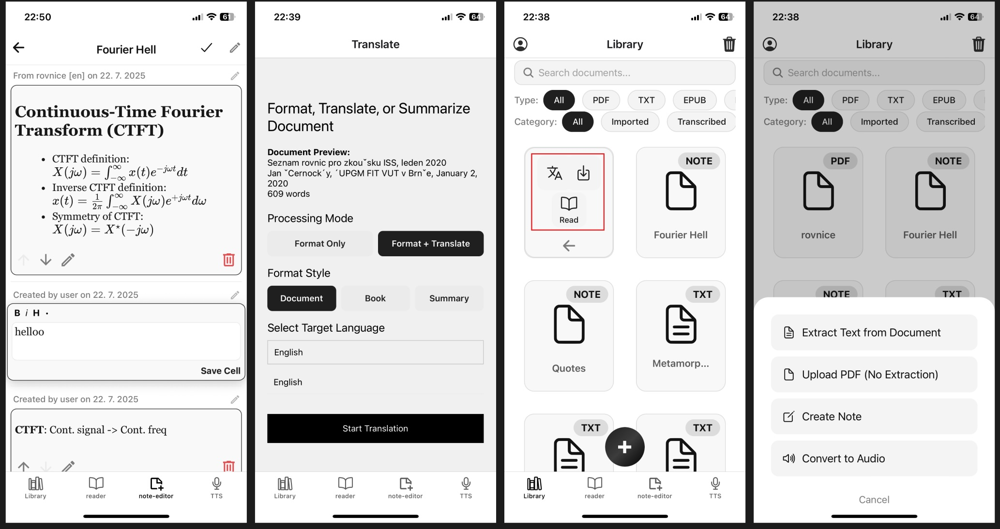
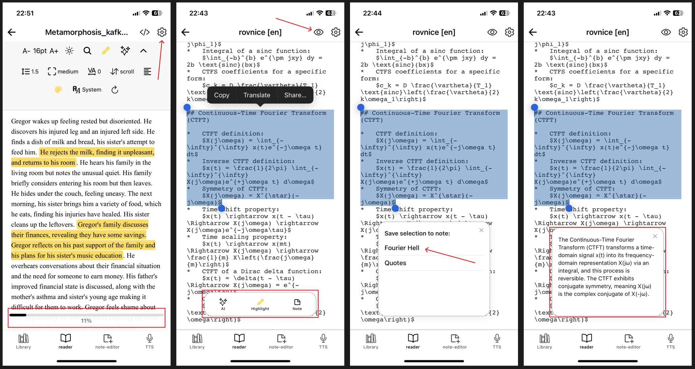
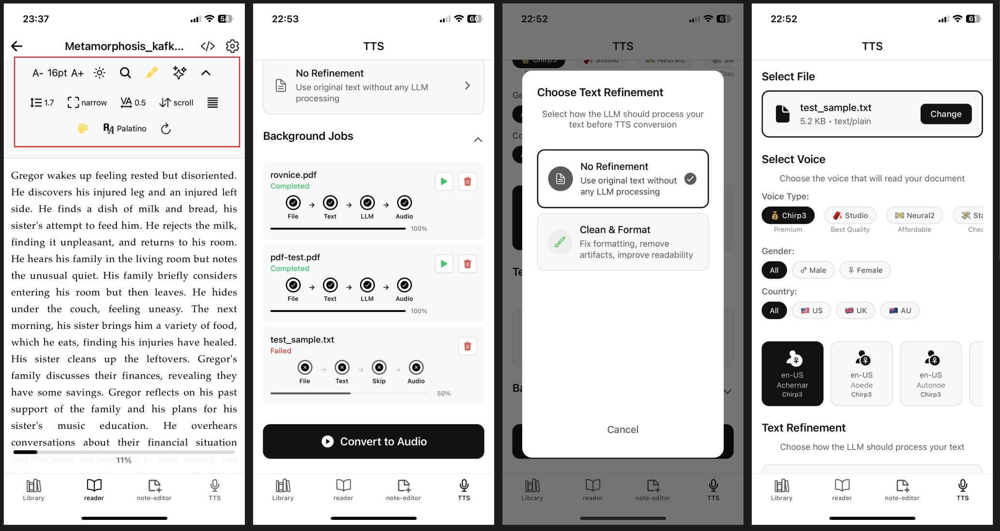

Multi-Format Support
Handles PDF, EPUB, DOCX, TXT, and Markdown files with hybrid extraction combining text parsing and OCR for scanned content.
AI Document Translation | Document Reader | TTS Converter
Cross-platform mobile app for document translation and AI-powered text-to-speech reading.



What It Does
Upload documents (PDF, EPUB, DOCX, TXT, Markdown), extract text, translate with AI, and listen to high-quality voice narration. Built for mobile-first reading and accessibility.
Handles PDF, EPUB, DOCX, TXT, and Markdown files with hybrid extraction combining text parsing and OCR for scanned content.
Uses Google Gemini for context-aware translation. Refine extracted text for better clarity and accuracy.
Google Cloud TTS with multiple voice models. Background processing for large documents with notifications.
Potential Use Cases
How It Works
Select any document from your device. The app extracts text using hybrid methods—direct text extraction for digital files, Google Vision OCR for scanned content and images.
Choose your target language and let Google Gemini translate the content. Optionally refine the text for better readability and TTS clarity.
Use the customizable reader with highlighting, notes, and search. Convert to audio with Google Cloud TTS—choose from different voice models and let it process in the background.
Reality Check
My goal was to try out and play around with multiple AI APIs such as LLMs, OCR, and TTS. I wanted to build something I would actually use, but there were some roadblocks, issues, and already better alternatives, which made me pause the project.
It’s an all‑around hub for file processing and doing cool stuff with it. My original goal was to translate large files, such as books that aren’t available in many languages, and create an audiobook as the final product (for my own use). However, LLM translations don’t have the same feel as a human translator, and while Google TTS is really good, the best models are extremely pricey and not viable for the average consumer.
I do think the Python notebook‑style cell notes are cool and a good way to keep notes organized and spaced out.
Technical Implementation
Fully decoupled frontend and backend communicating via HTTP APIs. The mobile app handles UI and basic document parsing, while the Flask server processes heavy operations like AI translation, TTS generation, and OCR for scanned documents. Supabase provides authentication, file storage, and database services.